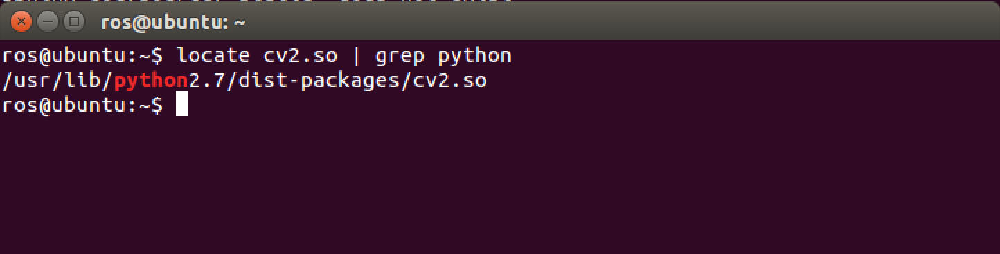
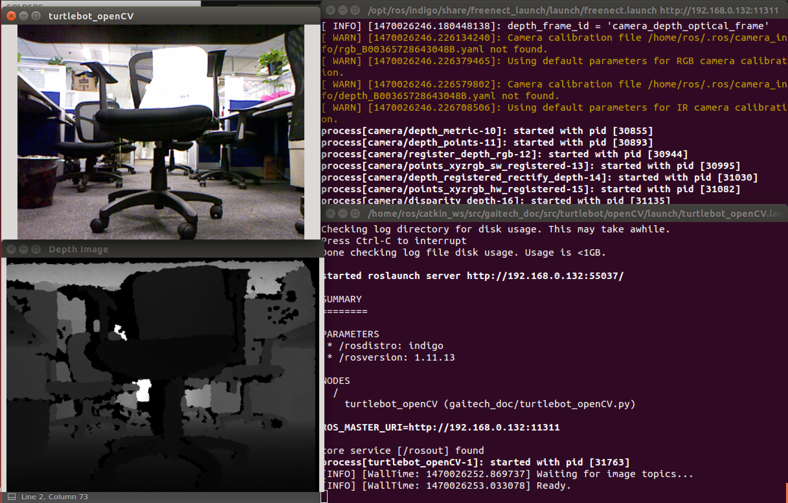

ROS OpenCV with Turtlebot¶
In this tutorial you will learn how to configure your turtlebot robot with OpenCV to stream videos from Microsoft Kinect or Asus cameras.
Warning
- Make sure that you completed installing all the required packages in the previous tutorials Setting-up 3D Sensor for the Turtlebot and Network Configuration and your network set-up is working fine between the ROS Master node and the host node.
Installing and Testing Camera Drivers¶
In this section you will learn how to install all the camera drivers either it is Asus or Kinect camera. After that you will learn how to test the camera and make sure if it works.
Installing the Camera Drivers¶
All you need to do is to install the ROS openni and freenect drivers by running the following command:
sudo apt-get install ros-indigo-openni-* ros-indigo-openni2-* \ ros-indigo-freenect-*
rospack profile
Testing your Camera¶
To be able to see the video stream coming from your camera we need to use the image_view package .
For Microsoft Kinect camera run the following command:
roslaunch freenect_launch freenect.launch
For Asus camera run the following command:
roslaunch openni2_launch openni2.launch
If there is no problem with your installation you will see some thing like this:
process[camera/camera_nodelet_manager-1]: started with pid [18070]
[INFO] [1420555647.969035762]: Initializing nodelet with 4 worker
threads.
process[camera/driver-2]: started with pid [18078]
Warning: USB events thread - failed to set priority. This might cause
loss of data...
process[camera/rectify_color-3]: started with pid [18112]
process[camera/depth_rectify_depth-4]: started with pid [18126]
etc.
Note
You will see a couple of warnings about USB event threads, you can ignore them.
The color video stream uses the following topic to publish on /camera/rgb/image_raw which uses the image_view package. Run the following command:
rosrun image_view image_view image:=/camera/rgb/image_raw
After a few seconds you will see the video stream from your camera on a small window.
Installing OpenCV packages¶
You need to download the OpenCV packages by running the following commands:
sudo apt-get install ros-indigo-vision-opencv libopencv-dev python-opencv
rospack profile
After installation type this command to make sure that you have successfully installed the packages:
$ python
>>> from cv2 import cv
>>> quit()
You can type the following command to make sure that the OpenCV Python library is installed in its proper location:
locate cv2.so | grep python
You will get an output like this:
Transform Image from ROS to OpenCV¶
In this section you will learn how to recieve and transform images from ROS and transform them to OpenCV.
Note
Make sure that you downloaded the gaitech_edu package from our GitHub repository
You will find a launch file called turtlebot_openCV in the following path gaitech_edu/src/turtlebot/openCV/launch/turtlebot_openCV.launch.
<launch>
<node pkg="gaitech_edu" name="turtlebot_openCV" type="turtlebot_openCV.py" output="screen">
<remap from="input_rgb_image" to="/camera/rgb/image_raw" />
<remap from="input_depth_image" to="/camera/depth/image_rect" />
</node>
</launch>
Run the file in a terminal:
roslaunch gaitech_edu turtlebot_openCV.launch
Note
Make sure that your camera driver is running.
For Microsoft Kinect camera:
roslaunch freenect_launch freenect.launch
For Asus camera:
roslaunch openni2_launch openni2.launch
This file will run a python script called turtlebot_openCV.py and you can find the file in the following path gaitech_edu/src/turtlebot/openCV/scripts/turtlebot_openCV.py. The code is well documented but we will have a look at a couple of parts of it.
All the OpenCV scripts have to import the cv2 and the older version of it cv2.cv as it has some functions needed. The Image and CamerInfo are used for ROS messages. To be able to convert from ROS to OpenCV you need to import the CvBridge and CvBridgeError from the cv_bridge package. As for the last import numpy, it is used because OpenCV use it to process the images.
import rospy
import sys
import cv2
import cv2.cv as cv
from sensor_msgs.msg import Image, CameraInfo
from cv_bridge import CvBridge, CvBridgeError
import numpy as np
This part is to initialize the two windows to display the images on.
# Create the OpenCV display window for the RGB image
self.cv_window_name = self.node_name
cv.NamedWindow(self.cv_window_name, cv.CV_WINDOW_NORMAL)
cv.MoveWindow(self.cv_window_name, 25, 75)
# And one for the depth image
cv.NamedWindow("Depth Image", cv.CV_WINDOW_NORMAL)
cv.MoveWindow("Depth Image", 25, 350)
As menthioned before that this program will display two windows, one for the Image and one for the Depth Image so each methods of them is for its Image processing, converting and displaying.
The code is well explained for the Image function and the Depth Image.
def image_callback(self, data):
# Use cv_bridge() to convert the ROS image to OpenCV format
# Convert the ROS image to OpenCV format using a cv_bridge helper function
frame = self.convert_image(data)
# Process the image to detect and track objects or features
processed_image = self.process_image(frame)
# If the result is a greyscale image, convert to 3-channel for display purposes """
#if processed_image.channels == 1:
#cv.CvtColor(processed_image, self.processed_image, cv.CV_GRAY2BGR)
# Display the image.
cv2.imshow(self.node_name, processed_image)
# Process any keyboard commands
self.keystroke = cv2.waitKey(5)
if self.keystroke != -1:
cc = chr(self.keystroke & 255).lower()
if cc == 'q':
# The user has press the q key, so exit
rospy.signal_shutdown("User hit q key to quit.")
def depth_callback(self, ros_image):
# Use cv_bridge() to convert the ROS image to OpenCV format
try:
# Convert the depth image using the default passthrough encoding
depth_image = self.bridge.imgmsg_to_cv2(ros_image, "passthrough")
except CvBridgeError, e:
print e
# Convert the depth image to a Numpy array since most cv2 functions require Numpy arrays.
depth_array = np.array(depth_image, dtype=np.float32)
# Normalize the depth image to fall between 0 (black) and 1 (white)
cv2.normalize(depth_array, depth_array, 0, 1, cv2.NORM_MINMAX)
# Process the depth image
depth_display_image = self.process_depth_image(depth_array)
# Display the result
cv2.imshow("Depth Image", depth_display_image)
Note
For more details about cv_bridge and OpenCV on ROS, please refer to the following ROS documentation pages:
After a short time you will see some thing like this:
To understand the whole process of transformation you can open the python script in the following path gaitech_edu/src/turtlebot/openCV/scripts/turtlebot_openCV.py , the file is well documented so you will be able to understand everything written inside the code.
Note
This code is originally from the cv_bridge_opencv.py file in the rbx1_vision package but with some other modifications.